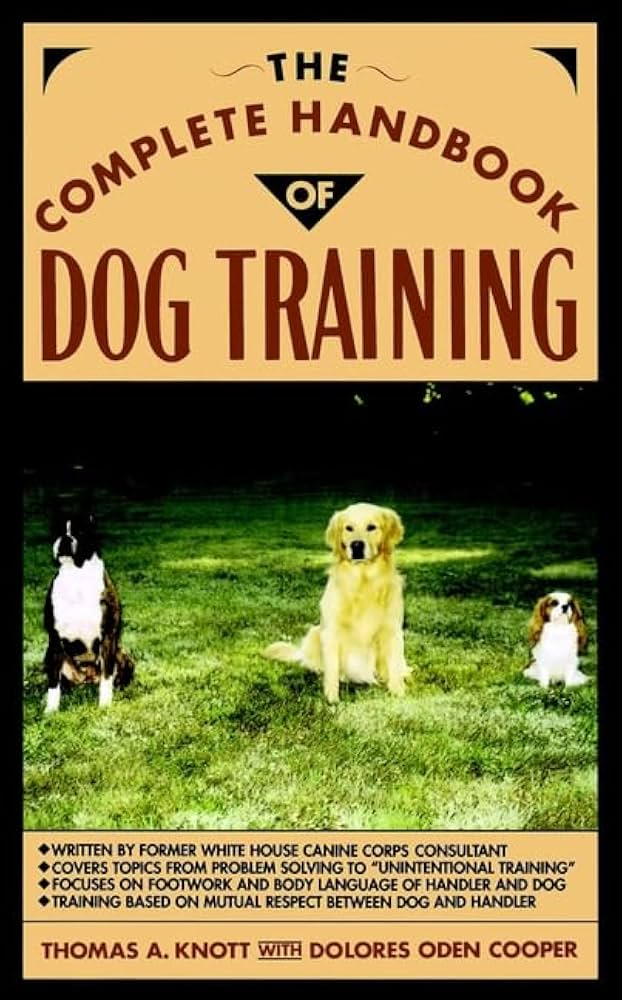
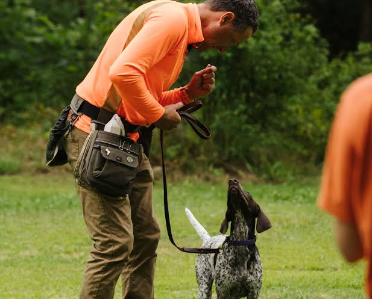

Here at Pup it Up we offer numerous services that you can choose from that fits your needs. You can choose to sign up your dog for classes at our studio which consists of a 1 hour course twice a week. You can also choose to have one of our trainers take a visit at your house so that your dog is in a familar place, only when available though. The final service you can choose is to buy our at-home training handbook that goes over everything that our trainers teach. All these services apply to dog training and behavioral correction.
We are gonna go over a breif summary of some techniques that are used for dog traing and behavioral correction. The first method is very well known which is positive reinforcment. When training your dog everytime they do it right, you must give them a treat or even just a pat on the head with excitement. The next method people use is a mix of correction-based and positive reinforcment training. When using this type of traing you still use treats and being excited when they do something wrong, but also if they get it wrong you must correct them. This can include tugging on the leash if not heeling or maybe a smack on the nose if they tear up something. The last technique is aversive training and is advised as a last resort. This can include shock collars, choke chains, or spray bottle. It is warned that using this technique for too long or too aggressivly can induce fear, anxiety, or damage the dog's trust in you. Those are some basic techniques used for dog, but here at Pup it Up we go more in depth and stay more connected with your dog.
The prices for all of our services vary widley depending on what you decide to invest in. To start off, you have the option to pay for each class one by one depending on how many classes you want to take or you can buy a month pass. Each class cost $85, but you can buy the monthly package for $578 which ends up saving you $102 a month. Refunds are not available if you miss a class when you buy the monthly package. The at-home handbook cost a flat rate of $100 which goes over everything our trainers know. Finally the at-home/private classes cost $150 per session, monthly package isn't available for private lessons.

